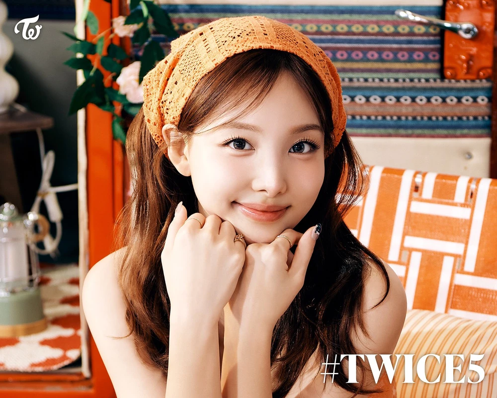
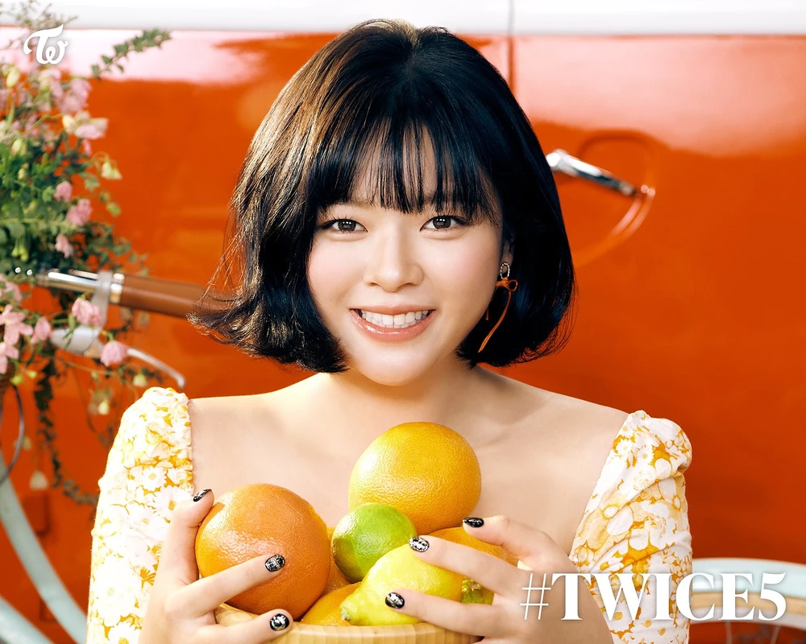
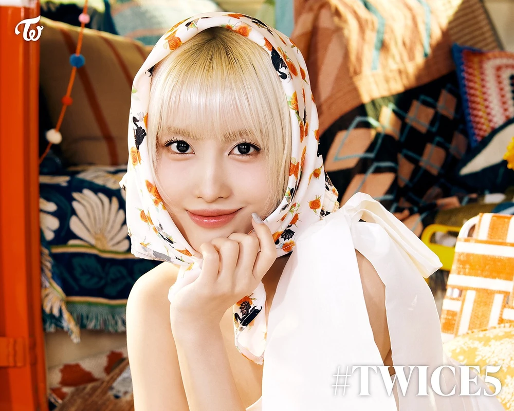
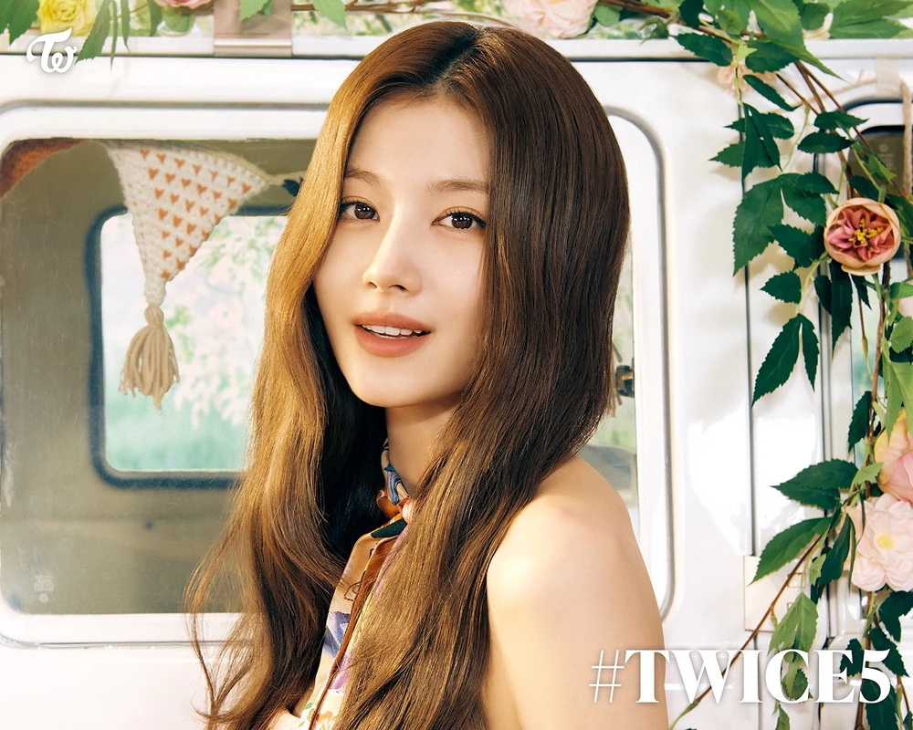
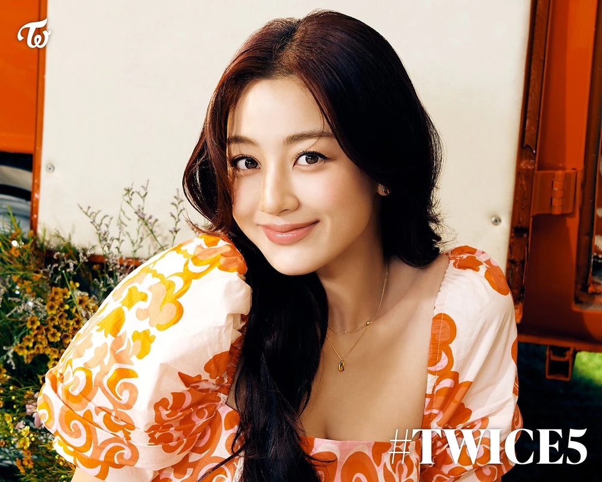
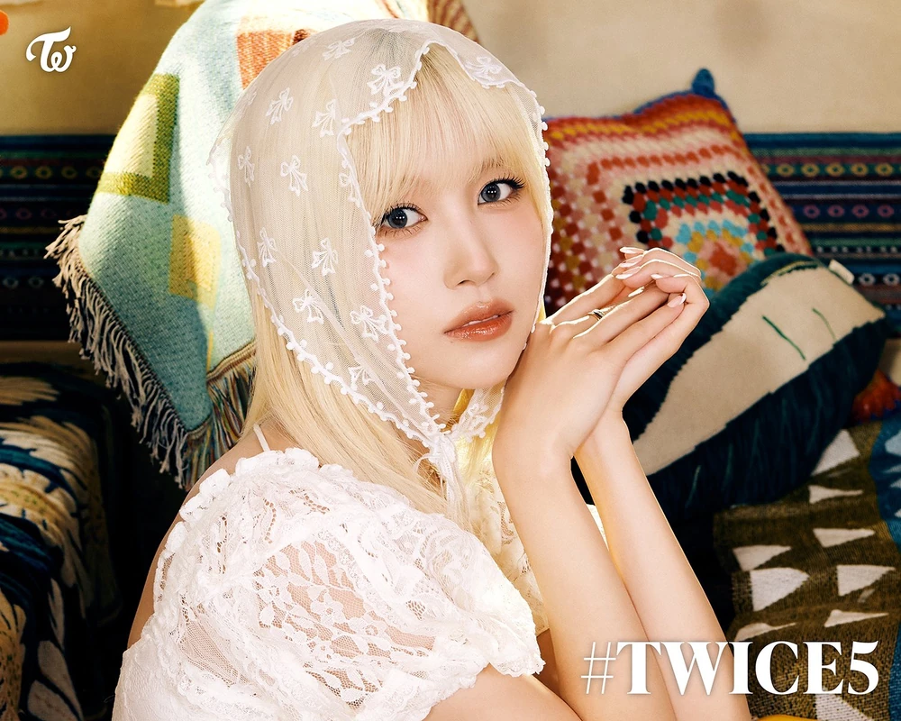
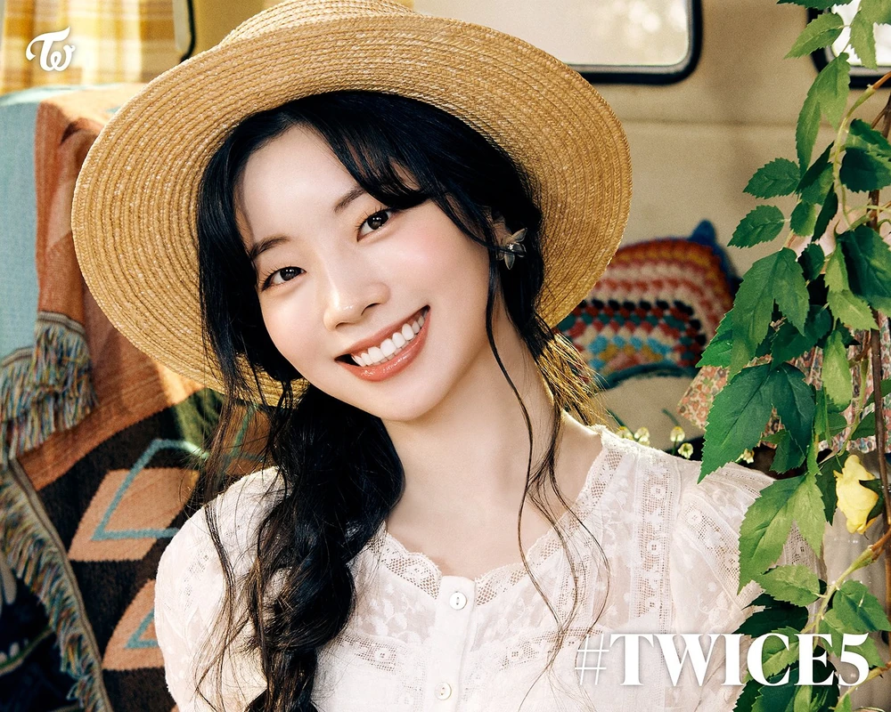
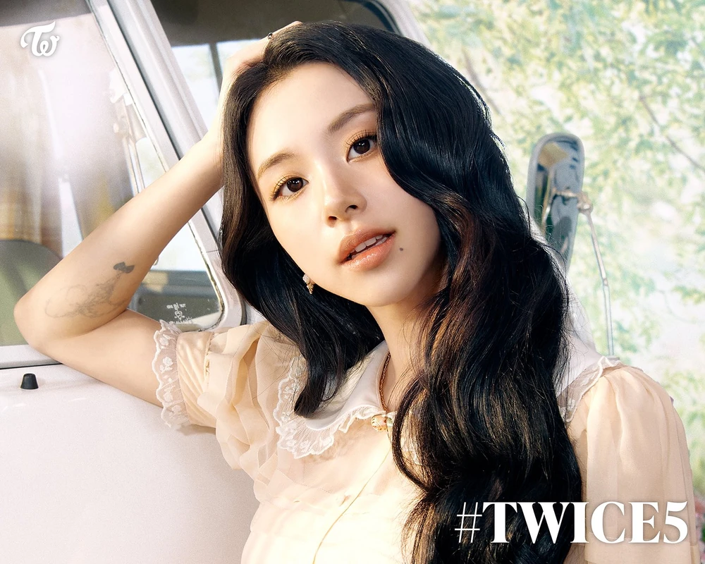
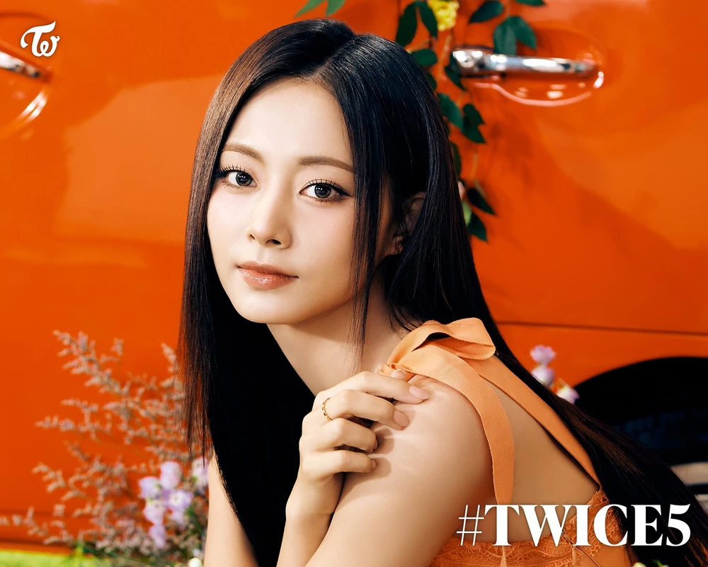

Get to know each of the nine talented members that make up TWICE, the global K-pop sensation

Nayeon
Lead Vocalist, Center, Face of the Group
Birthday
Sep 22, 1995
Nationality
Korean
Nayeon is the oldest member of TWICE. Known for her bright personality and bunny-like smile, she's often
called the "Vitamin" of the group.
"Giving up doesn't always mean losing"
She is the TWICE member who trained for the longest time. She trained for 10 years.

Jeongyeon
Lead Vocalist
Birthday
Nov 1, 1996
Nationality
Korean
Yoo Jeongyeon is known for her powerful vocals. She often takes care of the members
like an older sister.
"You can be in the last place but still, have lots of fun. It's the process and the people you're with, not
the
destination."
Her birth name is Yoo Kyungwan. She changed her name in 3rd grade, because she was teased as her name
sounded like a
boy’s name.

Momo
Main Dancer, Sub-Vocalist
Birthday
Nov 9, 1996
Nationality
Japanese
Hirai Momo is widely recognized as one of the best dancers in K-pop. She joined TWICE after being eliminated
then brought back on Sixteen.
"If you keep going, anything is possible."
She was eliminated in ep 6 of SIXTEEN, but J.Y. Park decided to add her as a member of TWICE, because of
her dancing
skills.

Sana
Vocalist
Birthday
Dec 29, 1996
Nationality
Japanese
Minatozaki Sana is known for her cute and bubbly personality. Her famous "Shy Shy Shy" line in CHEER UP made
her a viral sensation.
"Fighting. You said it's hard because you have a lot of worries, but you're already cheering up while
thinking, "How can
you solve them?" Don't be in a hurry, solve your problems one by one. From easy one"
Her hobbies are collecting perfumes and body mist

Jihyo
Leader, Main Vocalist
Birthday
Feb 1, 1997
Nationality
Korean
Park Jihyo trained for 10 years before debuting with TWICE. As the leader, she's known for her powerful vocals
and responsible nature.
"When you face tough times, remember there are 9 people hoping for your happiness."
She is the TWICE member who trained for the longest time. She trained for 10 years

Mina
Main Dancer, Sub-Vocalist
Birthday
Mar 24, 1997
Nationality
Japanese-American
Myoui Mina is a former ballet dancer known for her elegant dance style and calm personality. Fans call her
"Black Swan" for her graceful moves.
"If you are who you are, you will surely succeed.."
She was born in San Antonio, Texas, USA

Dahyun
Lead Rapper, Sub-Vocalist
Birthday
May 28, 1998
Nationality
Korean
Kim Dahyun is known as the "mood maker" of TWICE. Her eagle dance went viral, and she's famous for her variety
skills and bright personality.
"You may fall, get hurt, or feel pain while running. However, it is part of the entire process to move forward
step by
step, so those who don't give up and run on will succeed, but if you're still having a hard time, encourage
yourself and
cheer up! cheer up!"
In middle school, she performed a solo in a youth dance festival and was scouted by JYP Entertainment

Chaeyoung
Main Rapper, Sub-Vocalist
Birthday
Apr 23, 1999
Nationality
Korean
Son Chaeyoung is the main rapper of TWICE. She's also an accomplished artist who designs many of the group's
logos and merchandise.
"Everyone's happiness is very important. Take care of your happiness."
She is shy when singing in front of the other members even though her singing is as good as her rapping.

Tzuyu
Lead Dancer, Sub-Vocalist, Maknae
Birthday
Jun 14, 1999
Nationality
Taiwanese
Chou Tzuyu is the youngest member of TWICE. Known for her stunning visuals, she was voted "Most Beautiful
Face" in 2019.
"It may take time, but I think that dreams do come true as long as you do your best."
She was discovered by JYPE at the MUSE Performing Arts Workshop in Tainan in 2012, and she went to South
Korea on
November 15, 2012, to start her training